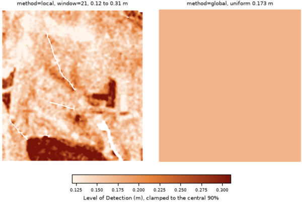

r.dem.lod computes a Level of Detection (LoD) raster for DEM differencing, the elevation-change magnitude below which a measured difference cannot be distinguished from noise. It supports a global (spatially uniform) and a local (spatially variable) mode.
The uncertainty of the difference is estimated from the Normalized Median Absolute Deviation (NMAD) of the elevation residuals on stable terrain:
NMAD = 1.4826 * median(|dh - median(dh)|)
The residual dh comes either from dem minus
reference, or from a precomputed (typically bias-corrected)
difference supplied via dod. Both paths difference the surfaces
before estimation, so the NMAD estimates the difference dispersion directly
and no sqrt(2) epoch factor applies on either path.
A single NMAD is estimated over the whole study area (or the stable_mask region when supplied), producing a uniform LoD value applied everywhere.
A spatially variable LoD is computed in a Gaussian-weighted moving window of size window (matching r.dem.stats):
sigma_win(x,y) = 1.4826 * median_W(|dh - median_W(dh)|) s_long^2 = max(0, floor^2 - median_stable(sigma_win^2)) LoD(x,y) = z * sqrt(sigma_win^2 + s_long^2 + sum(sigma_extra_i^2))
Global formula: LoD = z * sqrt(NMAD^2 + floor^2), one
convention on both input paths (a non-zero floor must be an independent
registration budget). Locally, floor is the flight-wide stable NMAD
and only its long-wavelength excess s_long is added, once; the dispersion
is defined only where at least min_stable stable cells fall in the
window. NULL in any sigma_extra or
point_density raster propagates to the LoD (unknown uncertainty means
untestable).
sigma_extra accepts additional 1-sigma rasters (for example the bias-model coefficient SE from r.dem.bias). output_sigma stores the combined 1-sigma surface and output_domain marks cells where the LoD is defined. With a stable_mask the LoD exists only within the window's reach of stable cells and is deliberately not extended beyond it; the tested share of observed cells is always reported.
When a point_density raster is supplied, the local uncertainty is penalised in sparsely sampled areas before the LoD is computed.
A precomputed nmad value can be supplied to skip the stable-pixel estimation, and a stable_mask restricts the residual statistics to terrain assumed unchanged (roads, parking lots, bare ground).
The output LoD raster can be passed directly to r.dem.change as the lod input for significance thresholding. For full per-source uncertainty propagation (combining several error rasters in quadrature) use r.dem.errprop.
The tool requires the Python scipy package.
The commands below use the example scene built in the r.dem toolset manual, which is derived from the North Carolina sample dataset. Build it there first.
A single detection limit for the whole map, estimated from the stable residuals:
g.region raster=elev_lid792_1m
r.dem.lod dod=dod_debiased output=lod_global method=global \
stable_mask=stable_lod confidence=0.95
The debiased residual on the stable cells is the injected noise, so the
result is z(0.95) times its NMAD:
NMAD: 0.0890 m LoD: 0.1743 m (uniform)
A spatially variable limit, keeping the combined 1-sigma surface for r.dem.errprop and the domain raster that marks where the limit is defined:
r.dem.lod dod=dod_debiased output=lod_local method=local window=21 \
stable_mask=stable_lod output_sigma=sigma_combined \
output_domain=lod_domain confidence=0.95
Because the survey noise varies across this scene, so does the limit: it runs from roughly 0.12 m on the smooth fields to over 0.30 m under canopy, against a single uniform value of 0.175 m. That is the case for method=local, and the reason the mask must include forest.
The limit is undefined wherever no stable cell falls inside the window, which on this scene means the interior of the change features. Fall back to the uniform limit there before thresholding:
r.mapcalc "lod_filled = if(isnull(lod_local), lod_global, lod_local)"
Add the bias-model coefficient SE from r.dem.bias to the quadrature when the regression path was used:
r.dem.lod dod=dod_regression output=lod_with_se method=local \
stable_mask=stable_terrain sigma_extra=bias_se \
output_sigma=sigma_with_se

Corey T. White, Center for Geospatial Analytics, NC State University
{kind=link}